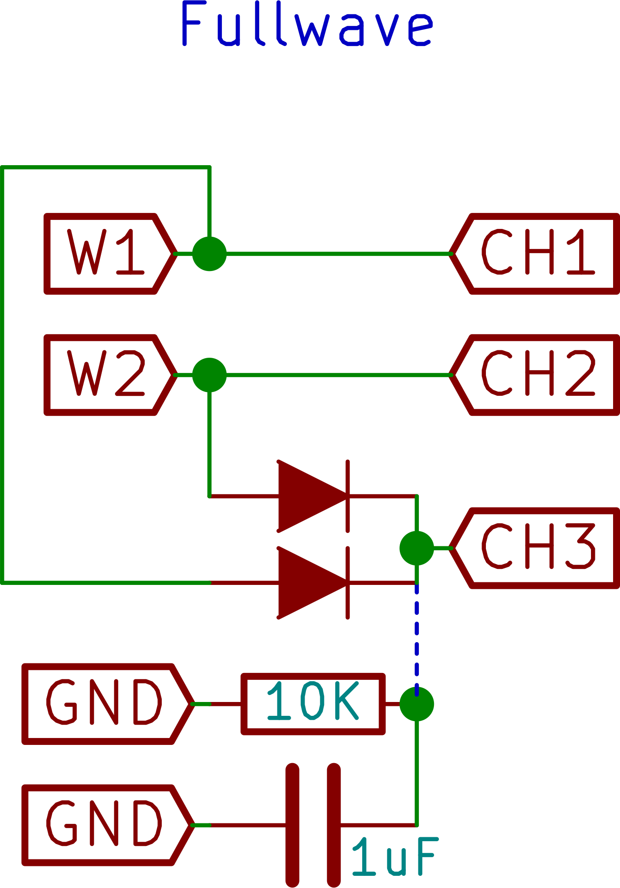

Full-Wave Rectifier
Study a fullwave rectifier using the sine wave generators

Full wave rectifiers combine the positive halves of 180 degree out of phase input waveforms such as those output from AC transformers with a center tap.
The rectified signal can be further filtered with a capacitor in order to obtain a low ripple DC voltage.
In case a transformer is not available, the sine wave generators of the PSLab can be to the same frequency, but with 180 degree phase difference in order to behave like one.
Two diodes are used to clip out the negative parts of both inputs, and combine them into a single output which is always in the positive region.